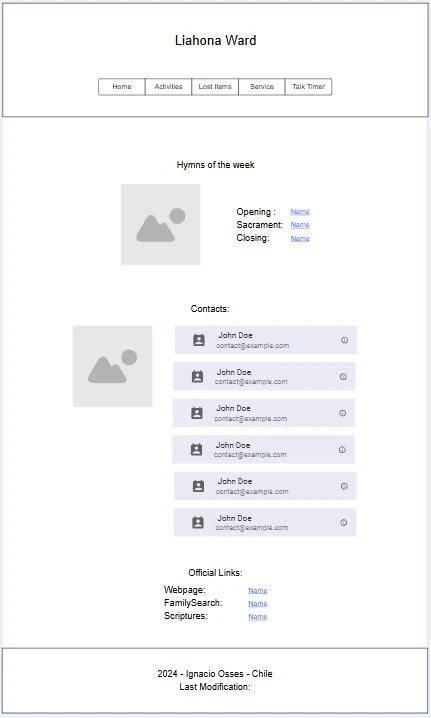

Site Name
Name: Liahona Ward
Reason: I chose this name because it reflects the purpose of the site, which is to enhance communication and information sharing within the congregation of my ward.
Site Purpose
The website will feature:
- Upcoming Activities: Displaying events and activities scheduled in the near future.
- Lost and Found: Providing a platform to report and view information about lost items found within the church.
- Service Opportunities: Informing members about opportunities to serve and contribute within the church community.
- Talk Timer: Warning speakers to stay within their allotted time during talks.
Scenarios
- How can I find information about upcoming activities?
- Where can I report a lost item?
- How can I learn about service opportunities within the church community?
- How can I keep track of my time during a talk?
Color Schema
Primary Color: #2e2e3a (headings)
Secondary Color: #1a1a2e (background)
Accent Color: #3498db (links, buttons)
Typography
Font: Merriweather (body text and headings)
WireFrame
